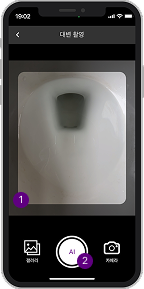
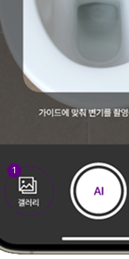

01 문제 PROBLEM
경북대병원에서 QA가 올라오면 해당 세션의 요청 흐름을 다시 추적해야 했습니다. 분석 요청에서 결과 표시 사이 어디에서 어긋나는지 확인하고, 실제 사용 상황을 앱에서 재현한 뒤 수정하는 흐름입니다.
운영 중에는 화면에 증상만 보이고 에러가 드러나지 않는 장애도 있었습니다. 앱과 서버 중 어디서 어긋나는지부터 찾아야 했습니다.
02 결정 DECISION
병원 QA는 "재현 가능한 수정"으로 분리
QA를 앱에서 재현하고 분석 요청에서 결과 표시까지 데이터 흐름을 추적했습니다. 재현된 지점에 한해 배포 앱 코드의 해당 흐름을 수정했습니다.
에러가 안 보이면 통신부터 보이게
에러가 화면에 드러나지 않을 때는 요청·응답 로그를 먼저 붙여 실제 통신을 확인했습니다. 원인을 좁힌 뒤 고치고, iOS·Android 기기에서 다시 확인했습니다.
03 구조 ARCHITECTURE
상자에 마우스를 올리면 하는 일과 만든 내용이 나오고, 예시 버튼을 누르면 요청 하나가 어떤 순서로 처리되는지 단계별로 볼 수 있습니다.
04 장애 추적 INCIDENT · 2025.12
사용자가 분석 결과를 조회하면 무한 로딩이 이어지다가 앱이 꺼졌습니다. 에러가 화면에 드러나지 않아, 앱과 분석 서버 사이의 통신을 직접 보이게 만들어 원인을 찾았습니다.
어디서 멈췄나

1 촬영 
2 AI 분석 요청 
3 결과 화면 여기서 무한 로딩 → 앱 종료
앱 안의 사용 안내에 들어 있는 실제 화면입니다.
통신 구조와 어긋난 세 지점
- 결과 화면Bloc · 화면 매핑3
- 응답 데이터 구조DTO · JSON 파싱3
- API 클라이언트Retrofit · Dio+ 로그 인터셉터2
- LLM 분석 서버이미지 분석 API1
요청 →← 응답
- 1서버 주소 분석 서버 주소가 바뀌었는데 앱 설정에 반영되지 않았습니다.
- 2경로·필드명 분석 API 경로와 이미지 업로드 필드 이름이 바뀌어 있었습니다.
- 3응답 구조 서버가 태그 붙은 텍스트 대신 항목별로 나뉜 JSON을 보내, 앱의 파싱이 실패하고 결과 화면이 응답을 기다리기만 했습니다.
화면으로 본 차이
[질감] …
[형태] …
[색깔] …
[출혈 여부] …
[기타 의견] …
[결론] …{
점수: 0.18,
유효성: true,
색상 특징: { 색, 채도, 설명 },
형태 특징: { 부피, 원형도, 비율, 설명 },
임상 지표: { 출혈, 잔류 점액, 설명 }
}[LLM Request] POST {분석 서버}/{분석 경로}
[LLM Response] Status: 200
[LLM Response] Data: { 점수, 유효성, 색상·형태·임상 지표 … }
[LLM Error] Status · Response 실패하면 상태와 본문을 그대로 남김회사 API라 실제 주소와 필드 이름은 한국어로 바꿔 적었습니다.
시간대별 기록
| 시각 | 한 일 | 기록 |
|---|---|---|
| 2025.12 | 결과 조회 중 무한 로딩 후 앱이 종료되는 문제 확인 | 사례 기록 |
| 12.23 (화) 17:45 | 1 분석 서버 주소 연결 수정, 1.1.6 패치·패키지 업데이트 | 커밋 |
| 12.24 (수) | 실제 응답을 확인해 응답 구조 변경을 문서로 정리하고 데이터 구조(DTO) 재설계 | 변경 문서 |
| 12.25 (목) 12:03 | 23 로그 인터셉터, 경로·필드명, DTO·화면 매핑 재작성, 무응답 안내, iOS 촬영 화질 개선 | 커밋 |
| 12.25 (목) | iOS·Android 기기 1차 테스트 통과, 추가 테스트 체크리스트 정리 | 커밋 메시지 · 체크리스트 |
고친 것
- 분석 API 경로와 이미지 필드 이름을 서버에 맞췄습니다.
- 응답 데이터 구조(DTO)를 실제 JSON에 맞게 다시 설계했습니다.
- 값이 비면 “정보 없음”, 응답이 없으면 “분석 결과를 받지 못했습니다. 다시 시도해주세요.”를 보여주게 했습니다.
- 요청·응답·에러를 로그로 남겨, 다음 장애 때 바로 확인할 수 있게 했습니다.
05 결과 RESULT
배포 앱은 병원 QA를 재현한 뒤 고치는 흐름으로 유지보수하고 있습니다.
2025년 12월 결과 조회 장애는 서버 주소, API 경로·필드명, 응답 구조의 불일치를 찾아 고쳤고, iOS·Android 기기 테스트로 결과 화면이 정상 동작함을 확인했습니다 (1.1.6 패치).
06 근거 EVIDENCE
- 역할
- 유지보수 / 병원 QA / 장애 대응
- 집중한 지점
- 병원 QA 재현 · 분석 데이터 흐름 · 인증 전후 이동 · 회귀 검증
- 기술
- Flutter · Dart · Go · Firebase
- 확인 자료
- 2025.12.23 · 12.25 커밋과 변경 문서. 회사 소스는 비공개입니다.
장애 사례는 커밋과 변경 문서 기준입니다. 증상을 처음 확인한 날짜와 스토어 배포 시점은 기록으로 확인되지 않아 적지 않았습니다. 의료기기 소프트웨어 피칼스캐너-M은 별도 프로젝트로 정리했습니다.